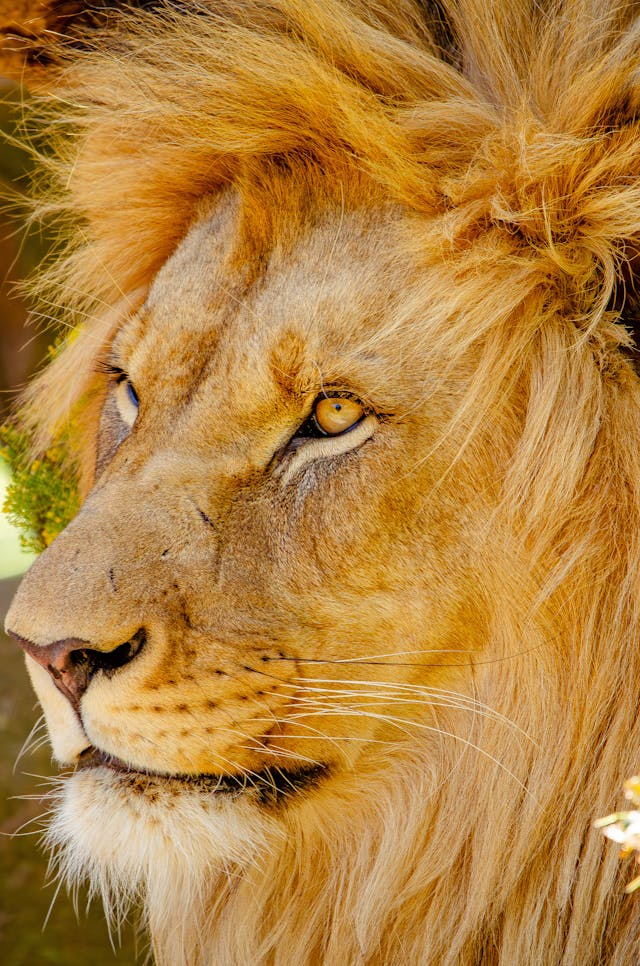

Animais Fantásticos
- 
Raposa
Raposas são pequenos a médios mamíferos onívoros pertencentes a vários gêneros da família Canidae. As raposas têm o crânio achatado, orelhas triangulares verticais, focinho pontiagudo e ligeiramente arrebitado e uma cauda longa e espessa.
Doze espécies pertencem ao grupo monofilético de "raposas verdadeiras" do gênero Vulpes. Aproximadamente outras 25 espécies atuais ou extintas são parte do grupo parafilético das raposas sul-americanas ou do grupo periférico, que consiste na raposa-orelhas-de-morcego, raposa-cinzenta e raposa-das-ilhas.
As raposas vivem em todos os continentes, exceto a Antártida. De longe, a espécie mais comum e difundida de raposa é a raposa vermelha (Vulpes vulpes) com cerca de 47 subespécies reconhecidas.
A distribuição global das raposas, juntamente com sua ampla reputação de astúcia, contribuíram para sua proeminência na cultura popular e no folclore em muitas sociedades ao redor do mundo.
Esquilo
Os esquilos pertencem a uma grande família de mamíferos roedores, de pequeno e médio porte, conhecida como Sciuridae. No Brasil, são também conhecidos como serelepe, caxinguelê, caxinxe, quatimirim, quatipuru, agutipuru ou acutipuru.
Os esquilos estão espalhados por quase todo o mundo, a maioria nas zonas de climas temperado ou tropical, mas também em algumas zonas de clima frio. Como todos os roedores, possuem presas fortíssimas, com que roem facilmente sementes, principalmente bolotas.
As sementes são as principais fontes de alimentação, mas também consomem insetos e frutas. Quando coletam alimento, enterram algumas sementes que encontram, sendo que algumas chegam a germinar, como pinhões e coquinhos, acabando por plantar árvores como araucária e jerivá.
Durante a gestação, os pais preparam o ninho para receber os filhotes. Constroem ninhos com folhas e galhos, em ramos muito altos, em árvores como a cajarana, para abrigarem as suas crias da chuva e do vento.
Urso
Os Ursos (latim científico: Ursidae) constituem uma família de mamíferos carnívoros de grande porte, contendo os ursos e os pandas. Eles são classificados como caníformes ou carnivoros caninos.
Os ursos são encontrados nos continentes da América do Norte, América do Sul, Europa e Ásia.
As características comuns dos ursos modernos incluem corpos grandes com pernas atarracadas, focinhos longos, orelhas pequenas e arredondadas, cabelos desgrenhados, patas plantígradas com cinco garras não retráteis e caudas curtas.
Os ursos são animais tipicamente solitários e, exceto quando estão a procura de um parceiro para acasalar ou mães acompanhando seus filhotes, passam a vida toda sozinhos.
Lobo
Lobo é um animal carnívoro da família dos canídeos e que pertence ao gênero Canis. São três espécies que recebem tal designação: o lobo-cinzento (Canis lupus), lobo-etíope (Canis simensis) e o lobo-dourado-africano (Canis lupaster).
O lobo-oriental (Canis lycaon) e o lobo-vermelho (Canis rufus), possuem classificações discutíveis se espécies em si, subespécies do lobo-cinzento, ou híbridos de lobo com coiote (coylobo).
Existem outros animais comumente referidos como "lobos" mas pertencem a outros gêneros ou outras classificações de mamíferos: lobo-da-terra (uma hiena), Mabeco (em alguns locais chamado lobo pintado), lobo-da-tasmânia (um marsupial), lobo-marinho (um pinípede), lobo-guará (um canídeo pouco aparentado).
Os lobos geralmente ostentam um porte maior em comparação às demais espécies de canídeos, além de possuírem ampla distribuição geográfica. Os lobos são invariavelmente espécies que ostentam certas habilidades sociais, tendo um espécime/casal de espécimes reprodutor(es) como líder(es), são geralmente predadores de alto nível trófico, com apenas o lobo-dourado ocupando invariavelmente a posição de mesopredador.
Macaco
Macaco é um termo de origem africana (provavelmente do banto makako) utilizado como designação comum a todas as espécies de símios ou primatas antropoides. É aplicada restritivamente no Brasil aos cebídeos (ou macacos do Novo Mundo) em geral. No sentido estrito, "macaco" refere-se às espécies de primatas pertencentes ao género Macaca.
Os macacos variam em tamanho desde o sagui-pigmeu, que pode ser tão pequeno quanto 117 mm ( 4+5 ⁄ 8 pol) com 172 mm ( 6+3 ⁄ 4 pol) de cauda e pouco mais de 100 g ( 3+1 ⁄ 2 oz) em peso, para o mandril macho, quase 1 m (3 pés 3 pol) de comprimento e pesando até 36 kg (79 lb).
Alguns são arbóreos (vivendo em árvores), enquanto outros vivem na savana ; as dietas diferem entre as várias espécies, mas podem conter qualquer um dos seguintes alimentos: frutas, folhas, sementes, nozes, flores, ovos e pequenos animais (incluindo insetos e aranhas)
Algumas características são compartilhadas entre os grupos; a maioria dos macacos do Novo Mundo tem caudas preênseis, enquanto os macacos do Velho Mundo têm caudas não preênseis ou nenhuma cauda visível.
Leão
O leão [feminino: leoa] (nome científico: Panthera leo) é uma espécie de mamífero carnívoro do gênero Panthera e da família Felidae. A espécie é atualmente encontrada na África subsaariana e na Ásia, com uma única população remanescente em perigo, no Parque Nacional da Floresta de Gir, Gujarat, Índia.
Existem outros animais comumente referidos como "leão" mas pertencem a outros gêneros ou outras classificações de mamíferos, plantas ou criaturas de mitos e lendas: leão marinho (um pinípede), Leão marsupial (um marsupial), leão da Nemeia (uma criatura da mitologia grega), Mico leão (um primata), dente de leão (Uma Flor).
A pelagem é unicolor de coloração castanha, e os machos apresentam uma juba característica. Uma das características mais marcantes da espécie é a presença de um tufo de pelos pretos na cauda, que também possui uma espora.
Habita preferencialmente as savanas e pastagens abertas, mas pode ser encontrado em regiões mais arbustivas. É um animal sociável que vive em grupos que consiste das leoas e suas crias, o macho dominante e alguns machos jovens que ainda não alcançaram a maturidade sexual.
FAQ
- Qual é a idade dos animais?
- A longevidade dos animais varia de acordo com a espécie, habitat, metabolismo e genética.A expectativa de vida dos animais é influenciada por fatores como: Raça, Porte, Genética, Nutrição, Cuidados veterinários.
- Eles são fantásticos?
- Os animais são incríveis por sua diversidade, inteligência, adaptabilidade, beleza e importância ecológica. Eles nos inspiram e nos ensinam sobre o mundo natural.
- Qual a diferença?
- Os animais se diferenciam entre si por diversas características, como a presença de ossos, a classificação em vertebrados e invertebrados, e a classificação em domésticos e selvagens.
- Como proteger?
- Essas ações compreendem: não praticar caça ou pesca ilegal; não alimentar animais silvestres; praticar turismo responsável de observação; participar de ações de educação ambiental; não comprar animais silvestres não autorizados pelo Instituto Brasileiro do Meio Ambiente e dos Recursos Naturais Renováveis (Ibama).
Contato
- contato@animaisF.com
- +55 (21) 9999-9999
- Rua do Conde, n° 21
- Rio de Janeiro - RJ